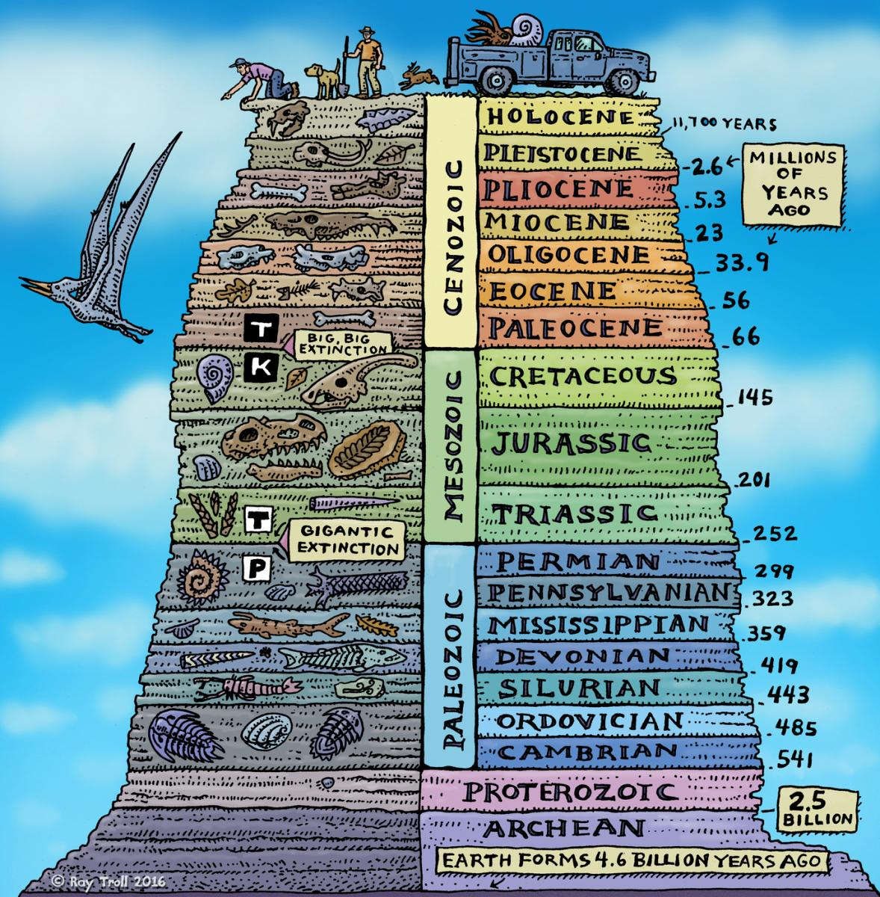
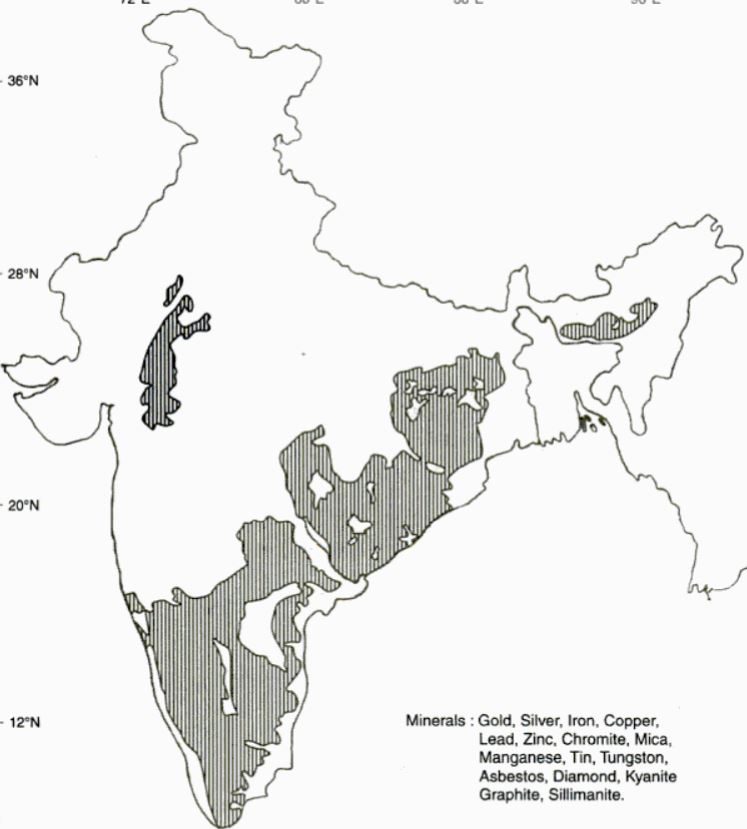
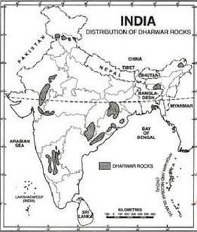

Geological Structure of India
The Geologic Time Scale

The Archean Formations
General Information
- Unfossiliferous rocks, devoid of any sediments
- Occurs mainly in Maharashtra, Tamil Nadu, Karnataka, Andhra Pradesh, Orissa, Jharkhand, West Bengal
- Also occurs in Aravallis, Bundelkhand and Mikir hills (Assam)
- Archean rocks are repositories of mineral wealth such as iron-ore, copper, manganese, mica, gold and silver
Map of Archean Formations

The Proterozoic Formations
The Dharwar System
General Information
- Proterozoic foramtions from 2.5 billion to 1.8 billion years ago
- Studied first time in Dharwar of Karnataka
- Oldest Metamorphosed-sedimentary rocks
- Composed of igneous debris, schists and gneiss
- Occurs in Dharwar, Bellary and Hospet of Karnataka Chotanagpur plateau, Upper reaches of Godavari and in the Aravallis
- Rich in iron-ore, manganese, mica, copper, zinc, lead, silver, gold, slate, asbestos
Map of Dharwar Formations

Vindhyan and Cuddapah System
General Information
- Cuddapah system occupies Lower valleys of Godavari, Talcher series, west of Aravalli
- Vindhyan system occupies large contiguous area from Chambal to the Son rivers
- Diamod bearing conglomarates are found in the Vindhyan system
- Cudappah system rocks in the Aravallis are rich in building materials like limestone and sandstone
Map of Cuddapah and Vindhyan